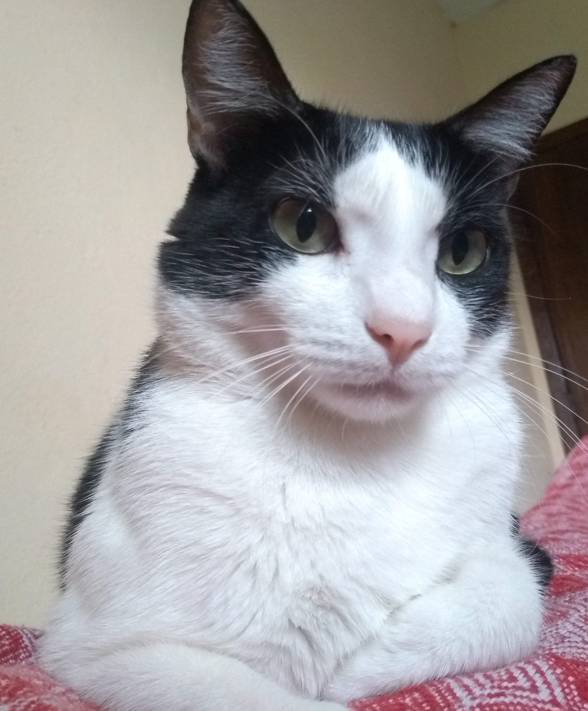

FABIANA MARTINS FRANCO
Instagram

Olá! Meu nome é Fabiana (pode me chamar de Fa, Fafa, Fabi, ou como quiser :D), sou professora e atualmente estudante da Trybe, tentando ser desenvolvedora (e quase falhando
miseravelmente, mesmo que sempre tentando). Nasci e moro em Belo Horizonte / MG, queijo e cachaça estão no meu sangue e preciso de mais sempre. Tenho um gato chamado Bruce, que eu acho que parece
com o Batman. (Eu falo que parece, mas não parece não...).

HABILIDADES
- Colaborativa
- Empática
- Resolvo os problemas
- Inglês avançado